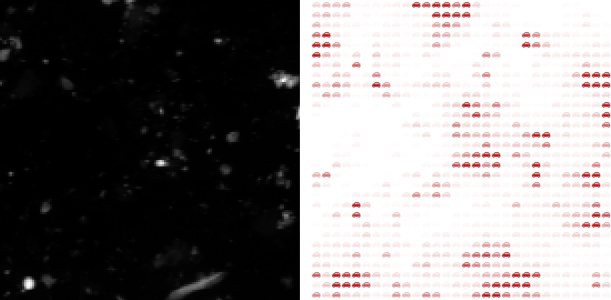

vlm:car variant lets OpenCV (Otsu threshold + contours) find every particle and then stamps a car on each,
so the VLM only boxes cars someone else placed. vlm:car_standalone redraws the whole scan as a grid of
cars whose opacity is the local brightness, with no detection step, so the VLM has to find the particles itself.
Benchmark only for now; the design may still change.
Workflow: Input to Output
One VLM call per element, then the same LLM co-location step as every VLM variant.
flowchart TB
subgraph IN["① INPUTS"]
direction LR
TIF@{ shape: docs, label: "Element TIFFs
150 × 150 px · ~15 elements" }
CFG@{ shape: doc, label: "compare_default.json
car_cell_px = 5 · car_stretch_pct = 95
prompt suffix" }
TIF ~~~ CFG
end
subgraph MOS["② CAR MOSAIC — encode_image_for_vlm(car_mosaic=5) · no detection"]
direction LR
P1("Normalize
min-max to 0–255
native size · no upscale · no dilate")
P2("Split into cells
5 × 5 px → 30 × 30 grid")
P3("Cell brightness
mean of the 25 pixels")
P4("Opacity
mean ÷ 95th-percentile cell
clipped to 1")
P5("Draw one car per cell
real proportions · 90 % of cell
on white · 34 px per cell")
P1 e1@==> P2 e2@==> P3 e3@==> P4 e4@==> P5
end
NO("Not used
no threshold · no contours
no blob finding")
NO -.- MOS
IMG@{ shape: doc, label: "Mosaic PNG
1020 × 1020 px · fractions map 1:1
onto the TIFF" }
subgraph VL["③ VLM — one call per element, in parallel"]
direction LR
V1("Prompt
LOCATE_SPARSE_XRF_PROMPT
+ car_standalone suffix (config):
'a particle is a cluster of
opaque cars, one box per cluster'")
V2{{"VLM
query_vlm_features()
→ boxes as fractions"}}
V3("Clean boxes
_clean_vlm_box()
% → fraction · clamp · drop bad")
V1 e6@==> V2 e7@==> V3
end
subgraph CO["④ LLM CO-LOCATION — same step as every VLM variant"]
direction LR
L1("build_colocate_prompt()
every element's boxes
+ sample context")
L2{{"LLM
query_llm_colocate()"}}
L3("Zones
best guess · reasoning
alternatives")
L1 e9@==> L2 e10@==> L3
end
subgraph OUT["⑤ OUTPUTS — vlm_car_standalone/ · compared in the report"]
direction LR
O1@{ shape: docs, label: "images/
{E}_model_input.png = the mosaic" }
O2@{ shape: doc, label: "…_multi_features.json
boxes per element" }
O3@{ shape: doc, label: "…_multi_llm_colocate.json
material zones" }
O4@{ shape: doc, label: "index.html
Level 1 · 2 · 3 vs vlm:car and others" }
O1 ~~~ O2 ~~~ O3 ~~~ O4
end
IN ==> MOS
P5 e5@==> IMG
IMG e5b@==> V2
V3 e8@==> L1
L3 e11@==> OUT
V3 --> OUT
e1@{ animate: true }
e2@{ animate: true }
e3@{ animate: true }
e4@{ animate: true }
e5@{ animate: true }
e5b@{ animate: true }
e6@{ animate: true }
e7@{ animate: true }
e8@{ animate: true }
e9@{ animate: true }
e10@{ animate: true }
e11@{ animate: true }
classDef input fill:#e8f5e9,stroke:#2e7d32,stroke-width:1.5px,color:#1b5e20
classDef proc fill:#ffffff,stroke:#005ea2,stroke-width:1.5px,color:#1a4480
classDef store fill:#e8f4fd,stroke:#005ea2,stroke-width:2px,color:#1a4480
classDef phase fill:#f3e5f5,stroke:#6a1b9a,stroke-width:1.5px,color:#4a148c
classDef spatial fill:#fff3e0,stroke:#e65100,stroke-width:1.5px,color:#7a2e00
classDef decide fill:#fffde7,stroke:#b28704,stroke-width:1.5px,color:#5d4300
classDef out fill:#fce4ec,stroke:#880e4f,stroke-width:1.5px,color:#5c0a33
classDef ai fill:#1a4480,stroke:#0b2a55,stroke-width:1.5px,color:#ffffff
classDef opt fill:#ffffff,stroke:#8a929c,stroke-width:1.5px,stroke-dasharray:5 4,color:#565c65
classDef best fill:#e8f5e9,stroke:#2e7d32,stroke-width:2.5px,color:#1b5e20
class TIF,CFG input
class P1,P2,P3,P4,V1,V3,L1 proc
class P5 best
class NO opt
class IMG store
class V2,L2 ai
class L3 spatial
class O1,O2,O3,O4 out
style IN fill:#f4faf4,stroke:#2e7d32,stroke-width:1px,stroke-dasharray:6 4,color:#2e7d32
style MOS fill:#fffaf3,stroke:#e65100,stroke-width:1px,stroke-dasharray:6 4,color:#e65100
style VL fill:#f5f7fd,stroke:#3f51b5,stroke-width:1px,stroke-dasharray:6 4,color:#3f51b5
style CO fill:#faf5fc,stroke:#6a1b9a,stroke-width:1px,stroke-dasharray:6 4,color:#6a1b9a
style OUT fill:#fdf5f8,stroke:#880e4f,stroke-width:1px,stroke-dasharray:6 4,color:#880e4f

How It Works, Step by Step
Normalize at native size
The TIFF is min-max scaled to 0–255 and kept at its native 150 × 150 px: no upscaling, no dilation, no CLAHE. Cells are defined in real scan pixels.
Split into cells
The image is cut into 5 × 5 px cells (
car_cell_px), a 30 × 30 grid. Each cell's brightness is the mean of its pixels.Opacity from brightness
Opacity = cell mean ÷ the 95th-percentile cell mean (
car_stretch_pct), clipped to 1. The top 5 % of cells are fully opaque and everything scales below them. This is a contrast stretch, not a threshold: every cell keeps a car, only its strength changes.Draw the mosaic
One 🚗 per cell on a white background, at its real proportions (the original car variant squashes it into a square), filling 90 % of the cell. Each cell is 34 px wide, so the image is 1020 × 1020 px and every fraction of it maps exactly onto the TIFF.
Ask the VLM
Same locate prompt as every variant plus a suffix: the scan has been redrawn as a grid of cars, more opaque means stronger signal, faint cars are background, and a particle is a cluster of neighbouring opaque cars: one box per cluster, not per car. Boxes come back as fractions and are cleaned like every VLM reply.
Same LLM co-location
All elements' boxes go to the same
query_llm_colocate()call as every VLM variant, giving material zones with best guess, reasoning and alternatives, so it can be compared withvlm:carat every level of the report.
car vs car_standalone
vlm:car (original) | vlm:car_standalone (new) | |
|---|---|---|
| Who finds the particles | OpenCV: blur → Otsu threshold → contours, before the VLM | The VLM, by grouping opaque cars |
| One car means | One particle OpenCV found | One 5 × 5 px patch of the scan |
| Faint particles | Lost if below the Otsu threshold | Still drawn, as fainter cars |
| Image | Upscaled to 1092 px, then markers | Native size, 34 px per cell |
| Car shape | Squashed to a square | Real proportions |
| Box precision | Follows the marker size (radius × 1.3) | Snaps to the 5 px cell grid |
| After the VLM | Identical: same box cleaning, same LLM co-location, same report | |
Where to compare them: the Level 1 heatmap (box F1 between the two), the Level 2 materials viewer and grid (side by side with linked hover), and Level 3 (which materials each found or missed).
Settings and Known Limits
- Why 5 px cells, not 10: the test TIFFs are 150 px, so 10 px cells give a 15 × 15 grid and most particles (5–20 px) become only 1–4 cars. Set
car_cell_px: 10to try it anyway. - Why the 95th percentile, not the brightest cell: one very bright particle made every other cell nearly invisible. Change with
car_stretch_pct. - Small particles are diluted: a particle smaller than a cell only lights part of it, so its car is fainter than the particle is bright.
- Touching particles merge: neighbouring particles become one cluster of cars unless a fainter cell separates them.
- Grid resolution: boxes can only be as precise as the cell grid (5 px on the scan).
- Still uses OpenCV for image handling: reading the TIFF, resizing the emoji and saving the PNG, as every variant does; never for finding particles.
Summary
car_standalone tests whether a VLM can find particles on its own when the scan is shown as familiar objects. The original car variant only proves the VLM can box cars that OpenCV already placed on each particle; the detection itself was OpenCV's. Here, no step decides where particles are: the scan is redrawn as a grid of cars, one per 5 × 5 px patch, each as opaque as that patch is bright, and the VLM must group the bright cars into particles and box each group.
Everything after the VLM is the same as every other variant, including the LLM co-location that names materials, so the report compares it directly with vlm:car and the OpenCV methods. If it matches or beats the original car variant, the VLM is doing the detection itself; if it falls short, the gap shows how much the original relied on OpenCV. The cell size and contrast stretch are settings, and the design may still change.